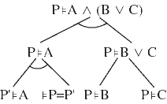
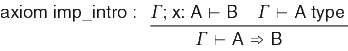
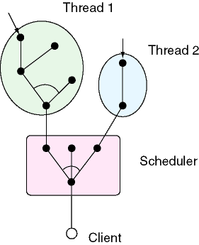

The process of proving generates proof trees. Each node in a proof is refined to a list of subgoals. Each branch in the tree may be and-branching, meaining that all subgoals are required for a successful proof; or a branch may or-branching, where any of the subgoals are sufficient to form a proof. A typical proof tree fragment is shown at the right. The root node produces an and-branch with two subgoals. The right subchild is an or-node, and either of the subgoals is sufficient to prove the goal.
The tactic mechanism is used to generate proof trees. Each rule in a logic produces a primitive tactic. Primitive tactics are always and-branching. The following digram is an example of a tactic defined in Itt_logic.

The ML value defined by this rule has the following type: val imp_intro : string -> tactic. Tactics are implemented as functions that take a proof goal, and produce a list of subgoals, and an extract that summarizes the proof step. The tactic module defines the following set of operations for proving with tactics.
module type Refiner =
sig
type term
type extract
type tactic = term -> term list * extract
val compose : extract -> extract list -> extract
val andthen1 : tactic -> tactic -> tactic
val andthen2 : tactic -> tactic list -> tactic
val choose : tactic list -> tactic
end
Each extract defines a partial proof tree; the compose function builds larger fragments from pieces. A tactic either suceeds, by returning a list of subgoals, or it fails by raising an exception.
There are three tacticals: the andthen1 tactical is defined informally as follows: the tactic (andthen1 tac1 tac2) applies tac1 to a goal t, producing subgoals t1, ..., tn. The second tactic tac2 is applied to each of these subgoals, and the subgoals it produces are concatenated to form the final result.
The andthen2 tactic is similar to the anthen1 tactic, but it allows different tactics to be applied to the subgoals. The tactic (andthen2 tac [tac1; tac2; ...; tacn]) tactic requires that the tac tactic produce exactly n subgoals, and taci is applied to subgoal i.
The choose tactical allows searching
with tactics. The tactic (choose [tac1; tac2; ...; tacn])
applies each tactic tac1, tac2, ...
in turn until the first one succeeds.
There is a great deal of parallelism in tactic-tree proofs: the branches of the proof considered independently. The branching factor is typically bounded by a constant, but the depth of the tree can grow to be quite large. for performance reasons, it is not desireable to completely thread the proof because the contention between threads would be quite large.
In the Nuprl-Light architecture, the base of the proof saved by a scheduler, which produces subjobs for independent threads. A diagram of the general architecure is shown in the figure at the right. A client (in this case, the Nuprl-Light proof editor) submits a job to the scheduler containing a proof goal, and the tactic to be applied to it.
The scheduler does not perform and active computation on the proof goal, but it has subthreads to do computation for it. There are seven operations that the scheduler performs:
The produce operation produces a new job that can be assigned to a new thread. The consume operation does the opposite: it asks a running thread to return a portion of its proof tree to the scheduler.
The scheduler is implemented in the module Thread_refiner_ens. The scheduler maintains a constant sized pool of threads that can be assignmed to subjobs. The scheduler maintains several job queues: the running queue list the currently running threads, and their locations in the proof tree; the pending queue lists nodes of the proof tree that haven't been assigned; and the waiting queue is a list of running threads that have been signalled. When a new job is submitted by a client, the scheduler places the job in the pending job pool, and enters the scheduler loop:
- If there is an idle thread, and a pending job, assign the thread to the job, and move the new node to the running queue.
- If there are running jobs, and no entries in the pending queue, signal all threads to return a portion of their proof tree to the scheduler.
- When a thread completes, prune the scheduler tree with the new result, and move the thread to the idle queue.
- If the scheduler proof tree is complete, return the result to the client.
- If the client cancels the job, kill all threads, and delete the proof tree.
The most complex operation in the scheduler is tree pruning. There are eight cases for inserting a result into the proof tree.